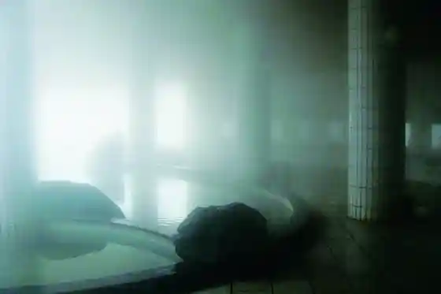
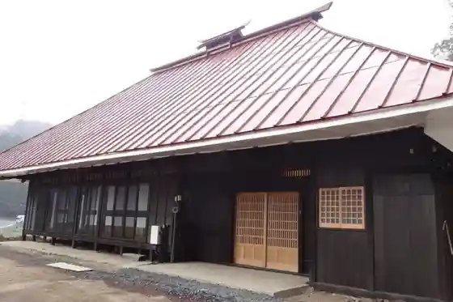
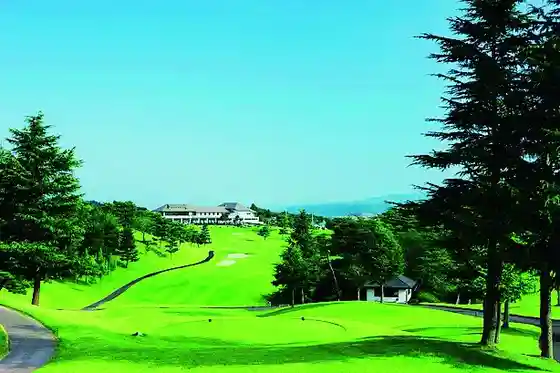
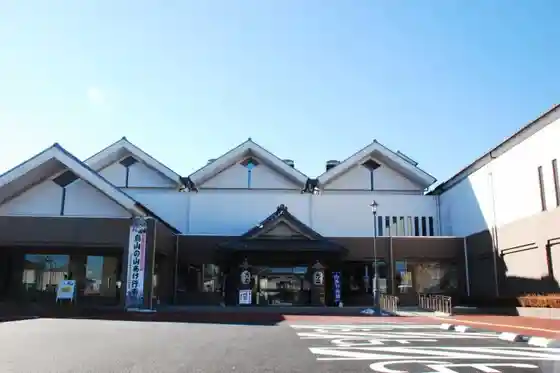

Ryumon Falls
Nasukarasuyama, Tochigi · 0287-83-2765 · Official / source link
Nasukarasuyama Taikin Onsen Gu Land Hotel
Nasukarasuyama, Tochigi · 0287-88-2211 · Official / source link

Hotaru Village no Ko Minka Ogisu
Nasukarasuyama, Tochigi · 0287-82-7255 · Official / source link

Karasuyama Shiro Kantorii Club
Nasukarasuyama, Tochigi · 0287-83-1100 · Official / source link

Yama Age Hall
Nasukarasuyama, Tochigi · 0287-84-1977 · Official / source link

Taikin Ekimae Kanko Koryu Shisetsu (Nasukara Market)
Nasukarasuyama, Tochigi · 0287-88-8585 · Official / source link
G7 Kantorii Kurabu
Nasukarasuyama, Tochigi · 0287-88-7711 · Official / source link
Ryumon Furusato Mingei Kan
Nasukarasuyama, Tochigi · 0287-83-2765 · Official / source link
Karasuyama Castle Ruins
Nasukarasuyama, Tochigi · 0287-88-6223 · Official / source link
Dokutsu Shuzo
Nasukarasuyama, Tochigi · 0287-83-1221 · Official / source link
Shimazaki Shuzo
Nasukarasuyama, Tochigi · 0287-83-1221 · Official / source link
ACCUM (Akyumu)
Nasukarasuyama, Tochigi · Official / source link
Sakai Hashi (Kindaika Isan)
Nasukarasuyama, Tochigi · 0287-83-1321 · Official / source link
Hanatate Toge Ikoi no Mori Park
Nasukarasuyama, Tochigi · 0287-83-1115 · Official / source link
Washi Village (Fukuda Seishisho)
Nasukarasuyama, Tochigi · 0287-82-2128 · Official / source link
Minaminasu Oto Campground
Nasukarasuyama, Tochigi · 0287-88-0064 · Official / source link
Fuji Shokudo
Nasukarasuyama, Tochigi · 0287-82-3543 · Official / source link
Resutoran Kasai
Nasukarasuyama, Tochigi · 0287-84-0487 · Official / source link
Yoshoku Chubo Suraivu Iivusu
Nasukarasuyama, Tochigi · 0287-82-2119 · Official / source link
Karasuyama Washi Hall
Nasukarasuyama, Tochigi · 0287-82-2100 · Official / source link
Matsuzuki Iori
Nasukarasuyama, Tochigi · 0287-83-2035 · Official / source link
Ishikawa Ya
Nasukarasuyama, Tochigi · 0287-82-2363 · Official / source link
Teuchi Soba Han Ta
Nasukarasuyama, Tochigi · 0287-84-3425 · Official / source link
Inaka Soba Tokoro Nagayama
Nasukarasuyama, Tochigi · 0287-84-3267 · Official / source link
Kurobasutekihausu
Nasukarasuyama, Tochigi · 0287-84-3968 · Official / source link
Okino Nosambutsu Chokubai Tokoro
Nasukarasuyama, Tochigi · 0287-84-3348 · Official / source link
Ayu Village Yazawa no Yana
Nasukarasuyama, Tochigi · 0287-84-1187 · Official / source link
Kyo Kawa Iori Takase
Nasukarasuyama, Tochigi · 0287-88-7486 · Official / source link
Izumi Shrine
Nasukarasuyama, Tochigi · 0287-88-6223 · Official / source link
Karasuyama Bridge
Nasukarasuyama, Tochigi · 0287-83-1321 · Official / source link
Miyahara Hachiman Shrine
Nasukarasuyama, Tochigi · 0287-88-6223 · Official / source link
Kumano Shrine
Nasukarasuyama, Tochigi · 0287-88-6223 · Official / source link
Takase Nosambutsu Chokubai Tokoro
Nasukarasuyama, Tochigi · 0287-88-9794 · Official / source link
Hisashi Kameyama Shrine
Nasukarasuyama, Tochigi · 0287-88-6223 · Official / source link
Nishiyama Tatsu Kaido no Dai Sakura
Nasukarasuyama, Tochigi · 0287-88-6223 · Official / source link
Senkei Tera
Nasukarasuyama, Tochigi · 0287-82-2876 · Official / source link
Taihei Tera
Nasukarasuyama, Tochigi · 0287-88-6223 · Official / source link
Taikin Suspension Bridge
Nasukarasuyama, Tochigi · 0287-88-7118 · Official / source link
Tensei Tera
Nasukarasuyama, Tochigi · 0287-82-3156 · Official / source link
Yakumo Shrine
Nasukarasuyama, Tochigi · 0287-88-6223 · Official / source link
Rakuseki
Nasukarasuyama, Tochigi · 0287-83-1115 · Official / source link